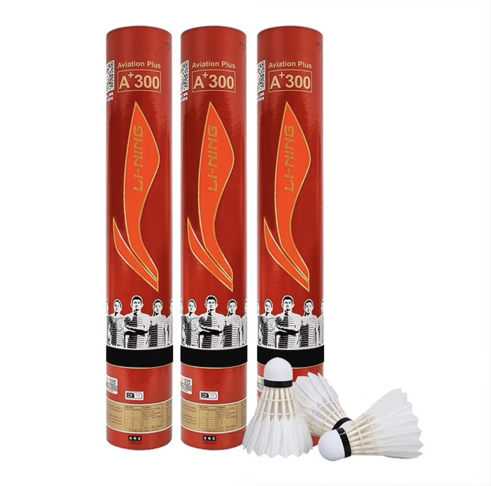

<!DOCTYPE html>
<html lang="en">
<head>
    <meta charset="UTF-8">
    <meta http-equiv="X-UA-Compatible" content="IE=edge">
    <meta name="viewport" content="width=device-width, initial-scale=1.0">
    <title>羽球</title>
    <link rel="stylesheet" href="Style.css">
</head>
<body>
	<!-- 导航栏容器 -->
	<nav>
		<!-- 导航项 -->
		<a href="index.html"target="_blank"></a>
		<a href="羽球拍.html"target="_blank"></a>
		<a href="羽球.html"target="_blank"></a>
		<a href="羽球鞋.html"target="_blank"></a>
	</nav>
</body>

<body>
    <div class="box1">
      <div style="background-color: rgb(240, 248, 255, 0.8);">
      <div style="margin: 20px;">
      <br>
      <h1 style="text-align:center;">羽球 SHUTTLECOCK</h1>
      <hr>
      <h2>赛场上的羽毛球，通常是以下几种高规格羽毛球。</h2>
      <ul style="font-size:15px;font-weight:900">
          <li>尤尼克斯 | AS50：最顶级的用料，指哪打哪</li>
          <li>李宁 | A+300：顶级比赛用球</li>
          <li>威克多 | 大师ace：威克多最高级别球</li>
          <li>亚狮龙 | Ultimate：纯手工制作，顶尖的飞行稳定性</li>
      </ul>
      <div style="text-align:center;">
          
        </div>
      <h4>尤尼克斯YONEX</h4>
      <h3>尤尼克斯YONEX，羽球界老大，奥运会专用球。尤尼克斯的AS50，国际羽联认证的专业比赛用球，采用高级鹅刀翎羽毛和天然软木球头，都是羽毛球工艺中最顶级的用料。干脆利落的击球感，适当发力就能带来稳定的飞行路线。每一片羽毛都有同等微微弯曲的弧度，确保了球体的飞行稳定，能让你指哪打哪。</h3>
      <div style="text-align:center;">
          
        </div>
      <h4>李宁</h4>
      <h3>李宁是中国著名运动品牌，其中两款羽球得到了国际羽联的认证，可以作为国际比赛用球，分别是A+600和A+300。不过A+600是专供比赛用，不可以对外出售。所以对于球友来说，A+300是最好的选择。这款球采用的是全圆鹅毛和全天然软木等高端材料，有严苛的品控，飞行稳定性和操控性都很强，而且非常耐打，能适应高强度的比赛。</h3>
      <div style="text-align:center;">
          
        </div>
      <h4>威克多VICTOR</h4>
      <h3>威克多VICTOR也是著名羽毛球品牌。这款球是其旗下最高级别的比赛用球，和尤尼克斯AS50一样，采用了高级鹅刀翎+天然软木球头的顶尖配置，飞行稳定，落点精准。球头采用了天然全软木，多次击打，依然能保持良好的飞行姿态。</h3>
      <div style="text-align:center;">
          
        </div>
      <h4>亚狮龙RSL</h4>
      <h3>亚狮龙RSL的产品线也是覆盖了入门级到比赛级。这款Ultimate作为顶级国际比赛用球，是少有的采用纯手工制作羽球系列，能达到顶尖的飞行稳定性和落点精准度。 </h3>
      <br>
    </div>
    </div>
  </div>

</body>
</html>